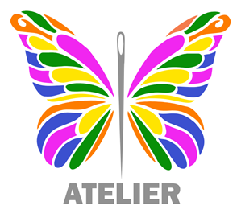

¿Cómo perciben los clientes o usuarios a la empresa?
Los clientes perciben a “Atelier” como un taller creativo, acogedor y profesional, de gran impacto visual y profundamente conectado con la naturaleza y la identidad de la Selva Central.
Diagnóstico de percepción, fortalezas de marca y aspectos a optimizar para Atelier.
Los clientes perciben a “Atelier” como un taller creativo, acogedor y profesional, de gran impacto visual y profundamente conectado con la naturaleza y la identidad de la Selva Central.

Cuenta con una paleta de colores perfectamente definida, un logotipo altamente reconocible, un servicio al cliente excepcional y elementos visuales coherentes con su propuesta de valor regional.
Podría optimizar la constancia de su marca en redes sociales (Instagram y TikTok), unificar la plantilla de sus materiales publicitarios impresos y renovar la iluminación de algunos espacios de la fachada.